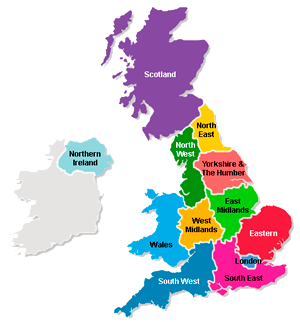

UK Senate¶
Regional chamber¶
The House of Lords has an archaic charm but is not fit for the post-Brexit modern era.
One of the advantages of the American model of a Senate is that it provides a regional balance.
This is especially important in the UK where governance is extremely titled towards London. There are lots of indirect forms of representation and implicit biases that London enjoys.
There are 100 or so historic counties in the UK, that is far too many. The US Senate has 100 members but it also has 5 times the population.
One thing we can keep from our EU days are the regional constituencies.
2 senators per region plus 1 senator for overseas territories and expats gives 25 senators which is a workable number. An odd number is good to prevent tied votes.
Each term can be six years with staggered elections so that each region re-elects a senator every three years, apart from the overseas region which just elects its sole senator every four years.
This means that every May 1st, around four Senators will be elected (perhaps a couple more if Senators die or resign in the preceding year).
If you make elections only every two years like in the US, it will be around eight Senators, but then you will also need irregularly timed by-elections, making it more complicated. Making it only four senators each election gives each region more focus in their turn.
As in the US Senate, the senator with the longest tenure in each region is known as the “senior senator”; the other is the “junior senator”.
The Senate should be based somewhere else than London; such as Birmingham or Manchester.
If the Senate is too powerful it will completely up-end our constitution. This system prevents that because the regions are not trying to have an equal population. This gives the House of Commons more democratic legitimacy and thus primacy over the Senate when deadlocked.
Transition¶
In the current House of Lords, the government appoints people with the expertise required and the Lords staff each other.
Meanwhile, each US Senator controls a platoon of staffers, lawyers, case workers and experts.
Getting from one system to the other may need a little time.
Only the “Lord Senators” would be allowed to vote or block House of Commons legislation.
However, the most active and knowledge Lords could be converted into advisers or kept engaged in some other way.
According to the Electoral Reform Society, “The net operating costs of the House of Lords in 2013-4 were £93.1m”.
Once the appointed Lords are removed, there is plenty of money there for the Senator’s staff. Even if you keep a third of the budget back for a central pool of lawyers and other Senate staff, that is still a very generous £2.5 million to pay for each Senator’s salary, staff and other expenses.
Not included in any of the above figures is building costs, and a new build Senate in Birmingham or Manchester will be far cheaper to maintain than the existing collapsing palace in the centre of London.
If the old chamber is kept, it can be converted into additional select committee chambers for the Commons or used for some other purpose.